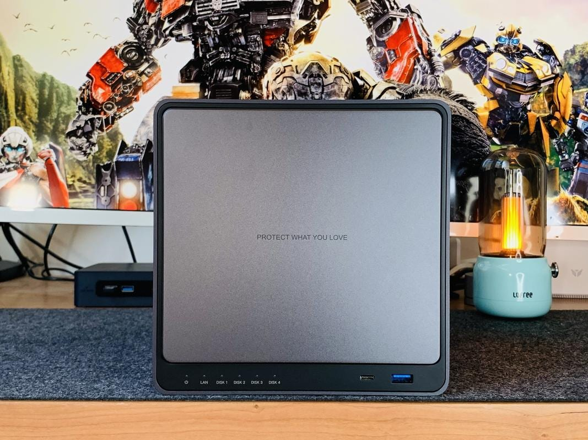

绿联 DX4600

绿联私有云 DX4600，四盘位加 N5105 处理器与双 2.5G 网口，价格亲民，主打家庭备份与网盘替代，是两千档位颇具竞争力的 x86 NAS，适合预算有限的私有云入门用户。
客观评测
DX4600 搭载 Intel Celeron N5105 四核处理器与 8GB 可扩展内存，提供 4 个热插拔盘位、双 2.5GbE 网口与 2 个 M.2 NVMe 插槽。实测内网传输可跑满 2.5G 带宽，多设备手机照片自动备份稳定，Docker 容器运行流畅。UGOS 系统面向家庭用户设计，上手简单，但套件生态与深度定制能力相比老牌厂商仍有差距。硬件性价比是其最大卖点。
主观点评
买它的理由很朴素：花更少的钱，把手机里几万张照片和一堆文件从网盘搬回自己家。设置过程对新手相当友好，家人各自的账号也能分清楚。它不是最精致的 NAS，但两千档能拿到这样的硬件配置，对预算敏感又想拥有私有云的人很有吸引力。等系统继续打磨，它有潜力更进一步。
优点与不足
- 硬件规格给得足，双 2.5G 网口加双 M.2
- 价格亲民，入门私有云门槛低
- 手机备份与多用户管理做得直观
- UGOS 系统生态仍在成长，套件丰富度一般
- 进阶功能与社区资料不如老牌大厂多
- 外观体积偏大，摆放占空间
参数规格
| 盘位 | 4 个 3.5/2.5 英寸盘位，支持热插拔 |
|---|---|
| CPU | Intel Celeron N5105 四核，主频 2.0GHz（睿频约 2.9GHz） |
| 内存 | 8GB DDR4（可扩展） |
| 网口 | 2 × 2.5GbE（支持聚合） |
| 扩展 | 2 × M.2 NVMe 插槽 |
| 接口 | USB 3.2 ×2、Type-C ×1 |
| 系统 | 绿联私有云 UGOS（支持 Docker） |
| 功能 | 自动备份、相册分类、文件同步、离线下载、多用户管理 |
| 功耗 | 约 35W（视硬盘配置） |
| 重量 | 约 3.6 kg（不含硬盘） |